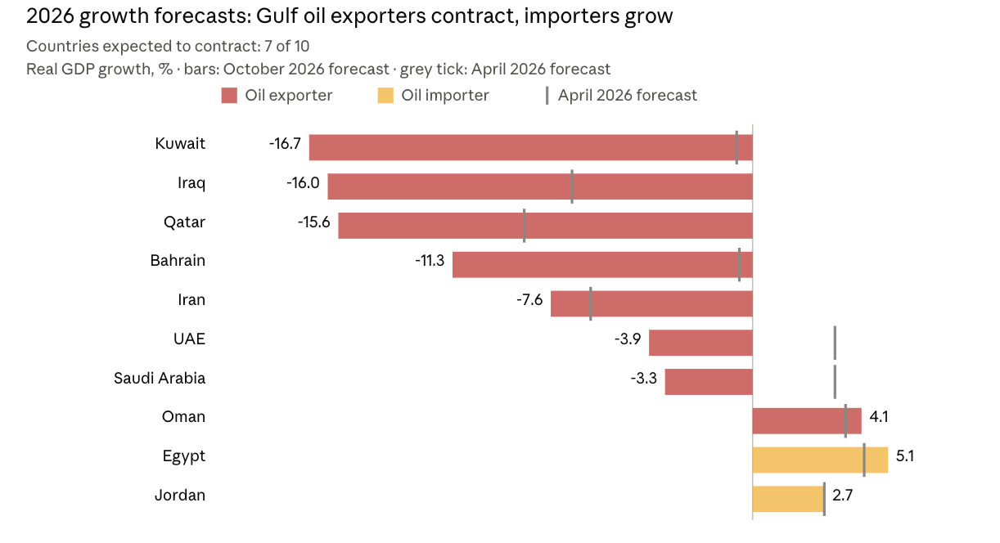

Rising oil prices are expected to benefit exporting countries. In the Middle East war that began in February 2026, however, while Brent crude stood roughly 50 percent above its pre-war level in September, the IMF projects that the Gulf Cooperation Council (GCC) economies will contract by 4.8 percent in 2026 and that Egypt, an oil importer, will grow by 5.1 percent (Regional Economic Outlook 2, 26). In this essay, I argue that the main reason the same shock produced such different outcomes, even within the Gulf, is the capacity of exports to shift to alternative routes. I should also note at the outset that most of the 2026 growth figures cited here are the IMF's October projections rather than realized outcomes.
Shock and Mechanism
The scale of the shock is undeniable. Oil and gas output in the directly affected Gulf exporters fell from 33 million barrels per day in February to about 19 million in May. By July, the cumulative supply loss had reached 1.8 billion barrels, exceeding the losses of the 1973 and 1990 shocks, yet the price increase remained limited relative to the size of this loss (2, 19).
The mechanism is simple: export revenue is the product of price and quantity, while real GDP measures quantity alone. In the directly affected exporters, higher prices and compressed imports offset the impact of lower export volumes on the trade balance (6). In other words, prices did their job on the revenue side. But because output collapsed, real growth collapsed with it: Kuwait is expected to contract by 16.7 percent in 2026, Iraq by 16 percent, Qatar by 15.6 percent, and Bahrain by 11.3 percent (26; see Figure 1). Since tourism and logistics depend on the same corridor, the GCC's non-oil GDP is also expected to shrink by 0.8 percent (24).

The Alternative Route Is Also a Strait
Differences within the Gulf itself show most clearly why route capacity matters. The countries most dependent on Hormuz and with limited alternative export routes (Bahrain, Iraq, Iran, Kuwait, Qatar) were hit hardest. In Qatar, oil and gas output fell by as much as 86 percent relative to February (2). In Saudi Arabia and the UAE, damage was more limited and alternative pipelines cushioned the loss (2). Oman, with limited exposure to Hormuz, is the only GCC country expected to grow in 2026 (8).
Still, an alternative route did not provide immunity. Saudi Arabia and the UAE are also expected to contract in 2026, by 3.3 and 3.9 percent respectively (26). One reason is that the alternative route is itself exposed to a chokepoint. In August, disruptions to pipeline operations and to maritime traffic through Bab el-Mandeb pushed Saudi output to its lowest level since the start of the war (2). Relying on Bab el-Mandeb instead of Hormuz does not remove the risk; it merely moves it to another strait. According to IMF simulations, even a persistent closure of the Red Sea would raise the GCC's containerized trade costs by about 5 percent (45).
This explanation has its limits. Iran is a direct party to the war, and its inflation already stood at 68 percent before the conflict began. Iraq, for its part, faced the shock with already acute financing constraints (3, 5). Oman, too, is a single case. Route capacity should therefore be read not as the sole determinant of outcomes but as the most consistent explanatory factor.
An economy's resilience depends less on how many sources of income it has than on whether those sources can all be hit at once from a single point. — Berra Berin Kökkurtöz
Importers: Growth and Its Cost
The picture among oil-importing neighbors is more mixed. Egypt's 2026 growth forecast was raised by about one percentage point relative to April, while Jordan's remained unchanged at 2.7 percent (26). Remittances and tourism held up, and in Jordan the initial tourism losses were offset by intra-regional travel (3). This suggests not that importers gained from the war, but that other sources of growth offset its negative effects.
Egypt's case nevertheless contains a tension. While its growth forecast rose, the currency lost about 6 percent of its value between February and August, and inflation climbed to 14.5 percent in August (3, 5). The report notes that exchange rate flexibility helps preserve reserves and ease external adjustment, but raises inflation through higher import prices (17). Egypt appears to be a concrete example of this trade-off: households are partly paying for the economy's resilience through inflation.
Lebanon, by contrast, is contracting markedly despite being an oil importer, owing to its proximity to the conflict (8). This shows that a country's position in energy trade is not decisive on its own.
Which Diversification?
Diversification is the IMF's central recommendation, but this crisis requires distinguishing three dimensions of the concept: product (what is exported besides oil), route (through which channels exports can be shipped), and sector (non-oil sources of income). In the Gulf, these three dimensions are not independent of one another. Non-oil tourism and logistics depend on the same corridor, while the alternative routes depend on another strait. Although the Gulf has made the region's largest gains in export diversification over the past two decades, it has closed only one-fifth of the gap with other emerging markets (44). Moreover, the report's finding that diversification reduces losses from external demand shocks (46) does not examine a physical disruption to shipments, so it cannot be applied directly to the Hormuz crisis.
In my view, the real lesson is this: an economy's resilience depends less on how many sources of income it has than on whether those sources can all be hit at once from a single point. The baseline assumes that disruptions will be resolved after the first quarter of 2027 (7). If the conflict persists, the GDP of directly affected exporters could remain about 3.8 percent below the baseline (20). This risk suggests that, for the Gulf, diversification should be measured not by the number of sectors but by how far shared vulnerabilities have been reduced.
References
- International Monetary Fund. (2026). Regional Economic Outlook: Middle East and Central Asia—Steering Through Uncertainty: Strengthening Resilience in Challenging Times. Washington, DC. https://doi.org/10.5089/9798229056908.086